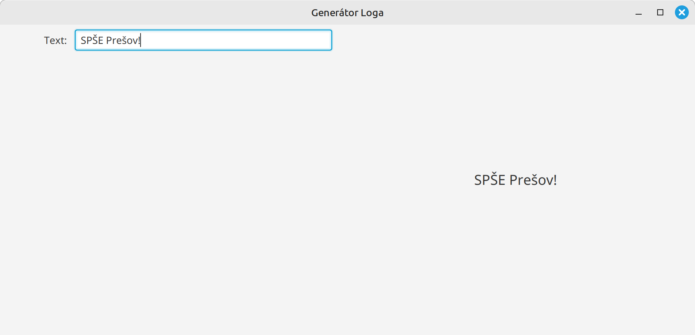

Cvičenie 17: Použitie property objektov¶
Na dnešnom cvičení si vytvoríme generátor loga, v ktorom využijeme property objekty na efektívnu komunikáciu medzi komponentami.
Cieľom je vytvoriť aplikáciu, ktorá umožňuje vytvoriť logo a upraviť jeho rôzne vlastnosti. Parametre sa budú nastavovať v ľavej časti aplikácie, a logo sa zobrazí v pravej časti.
{kind=link}
Začneme s jednoduchou verziou programu a postupne do neho budeme pridávať nové funkcionality.
Úloha 17.1: Projekt generátor loga
Stiahnite si repozitár https://github.com/wagjo/opg-gui-ulohy-logo.git a otvorte ho vo vašom IntelliJ IDEA.

Oboznámte sa so zdrojovým kódom aplikácie
Úloha 17.2: Pridanie základných vlastností loga
Začneme z pridávaním základných nastavení. Upravte aplikáciu tak, aby sa v nej dali nastavovať nasledovné parametre loga:
- text loga
- farba textu
- natočenie
- podčiarknutie loga
Zmeny v logu vykonajte buď pomocou prepojenia property objektov medzi ovládacími komponentami a logom alebo pomocou listenerov nad ovládacími komponetami.
{kind=link}
Prepojenie medzi property objektami vykonáme pomocou bind, napr.
Zmena nastavenia pomocou listeneru sa robí pomocou addListener nasledovne:
Úloha 17.3: Pridanie pokročilých nastavení
Postupne do aplikácie pridávajte ďalšie nastavenia, napr. podľa príkladu na začiatku tohto cvičenia. Väčšinu zložitejších nastavení už nebude možné jednoducho prepojiť pomocou property objektov, avšak stále budeme môcť využiť listenery na to, aby sme zistili, či sa v niektorom ovládacom prvku zmenila hodnota.
Pokročilejšie nastavenia:
- vlastnosti písma: veľkosť, hrúbka, sklon, typ písma - použite metódu
logo.setFont() - efekty písma: tieň (
DropShadow), žiara (Glow), odraz (Reflection), vnútorný tieň (InnerShadow). Všetky efekty viete aplikovať pomocoulogo.setEffect() - vlnenie loga pomocou
DisplacementMap- zložitejšie, je potrebné vytvoriť vlastnú mapu zvlnenia - iné nastavenia: natiahnutie X/Y osi, presvitnosť, farba pozadia, ...
príklad vlastnej mapy zvlnenia:
// aplitúda napr. 5 a frekvencia 20
private DisplacementMap createWavyEffect(double amplitude, double frequency) {
int width = (int) logo.getWidth() + 50;
int height = (int) logo.getHeight() + 50;
FloatMap floatMap = new FloatMap();
floatMap.setWidth(width);
floatMap.setHeight(height);
for (int i = 0; i < width; i++) {
double v = (Math.sin(i / 25.0 * Math.PI) - 0.5) / 60.0;
for (int j = 0; j < height; j++) {
floatMap.setSamples(i, j, 0.0f, (float) v);
}
}
DisplacementMap displacementMap = new DisplacementMap();
displacementMap.setMapData(floatMap);
return displacementMap;
}